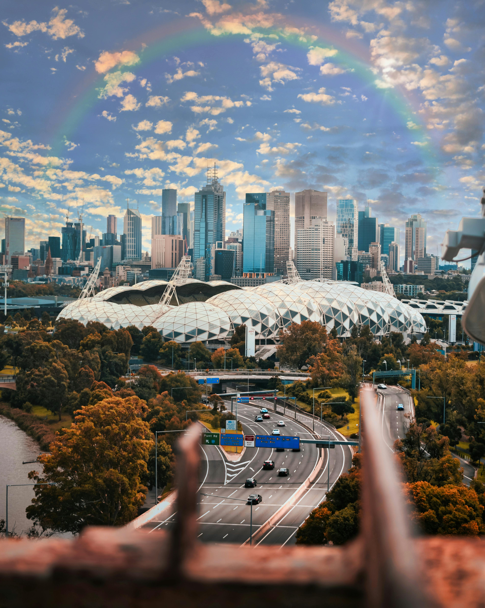

Hometown Overview
I was born and raised in Melbourne, a vibrant city known for its cultural diversity, historic architecture, and thriving arts scene.
Cultural Highlights
Melbourne is renowned for its vibrant arts and cultural scene, hosting events like the Melbourne International Film Festival, White Night, and the Melbourne Fringe Festival.
Famous Landmarks
Some of the must-see places in Melbourne include Federation Square, the iconic Royal Botanic Gardens, and the historical Melbourne Cricket Ground.
Food and Cuisine
Melbourne offers a diverse food scene with influences from around the world. Popular places to eat include Queen Victoria Market and various laneways filled with cafes and restaurants.
Climate
Melbourne has a temperate oceanic climate with four distinct seasons. The best time to visit is during the spring and autumn months when the weather is mild.